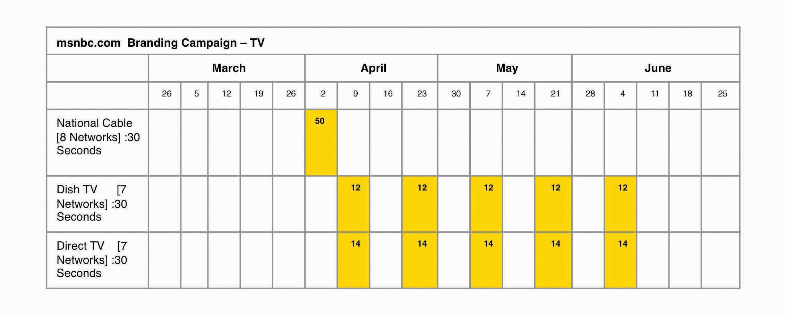
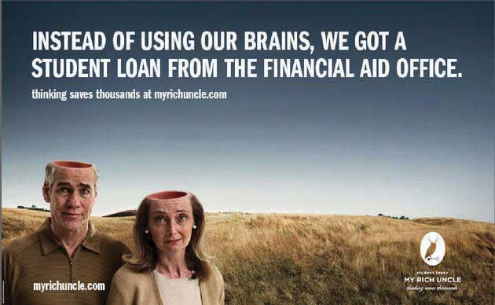

After studying this section, students should be able to do the following:
Information-dense ads. Newspapers are well suited to deliver complex messages like pharmaceutical ads. The vehicle lets the advertiser present in-depth information at less cost than would be possible on TV or in linear media like radio or quick-glance billboards. What’s more, readers are used to getting in-depth information from the newspaper, so the ad fits into that style. The print ad provides room to present the information and provide all the supporting reasons. Also, the consumer can keep the print ad for future use or reference.
Local. Newspapers work well for local reach—you can target newspapers by region. This also lets you tie the ad to action. The local ad can tell consumers exactly where and when to get the product.
Declining and aging readership. On the other hand, newspaper circulation continues to fall as existing readers age and younger consumers choose to get their news from the Internet. Daily circulation decreased 2.1 percent and Sunday circulation fell 3.1 percent, according to the spring 2007 report from the Audit Bureau of Circulations.
Specificity. Magazines can be more finely targeted because many of them address readers who share very specific interests, such as Cat Fancy, Guns & Ammo, or Cosmopolitan. Others attract a well-defined demographic readership; for example, airlines’ in-flight magazines boast an affluent audience. The median household income for adults who read United Airlines’ Hemispheres magazine or American Airlines’ American Way magazine is $147,000, according to Mendelsohn Media Research. The average reader of these magazines is a forty-five-year-old highly educated businessperson—someone very desirable for advertisers of technology, travel, and real estate products to reach. There’s a good chance many of these travelers will pick up the magazine at some point during the flight.Matthew Schwartz, “In-Flight Magazines Take Off for B-To-B; Advertisers Take Opportunity to Reach Captive Audience,” B to B, January 15, 2007, 3.
National reach. Whereas newspapers are local, magazines have national or international reach. Some magazines, such as Time, also print regional editions to support regional demographic differences and more targeted advertising.
Multiple impressions per copy. Magazines last longer than newspapers and are often passed from person to person (magazines often cite this number of pass-along impressionsThe number of times a magazine or other piece of media is passed from one person to another. to justify charging higher prices to advertisers). The targeted nature of magazines, the good visual quality of their images, and the high credibility of the medium means that the ads are likely to reach and influence the right audience.
Long lead time. On the other hand, the production and distribution schedules of magazines require months of lead time. A monthly magazine slated to stay on newsstands through the end of December may have been printed in early November with a deadline for ad copy in September. This reduces the medium’s flexibility to respond to market changes.
High cost. A general-audience magazine typically charges more than $100,000 for a full-page four-color ad. Costs can grow if the advertiser wants guaranteed placement (e.g., near an article with the same theme as the product) and even more for ads on the back cover or directly inside the cover page. Moreover, advertisers often need to buy ads in multiple magazines to reach a wide audience. Despite the costs, ad spending in consumer magazines increased 4.6 percent in 2006.Gregg Cebrzynski, “And Now a Definitive Statement on the Future of Marketing and Media: Who Really Knows?” Nation’s Restaurant News, April 9, 2007, 14.
Figure 10.3

The print portion of the media plan that The Media Kitchen put together for msnbc.com: The different colors represent different sizes and placements—for example, blue represents a full-page placement, and red is a full-page placement near the table of contents of that publication.
When it came time to launch the msnbc.com branding campaign, the team strongly considered magazine print media.
Mass audience. TV attracts mass audiences, and network TV is the highest-exposure medium every hour of the day, according to “The Middletown Media Studies: The Media Day,” a study of consumer media habits by Ball State’s Center for Media Design. At least 30 percent of the study’s participants were exposed to TV programming during the day, and at times as many as 70 percent were watching. The study also found that consumers watch TV and use the Internet more than ten times as often as they read newspapers and magazines.Gregg Cebrzynski, “Taking on the Media Circus,” Nation’s Restaurant News, July 9, 2007, 33.
Very creative visual medium. TV supports dynamic content and creative storytelling. Advertisers can demonstrate the product and show the faces of the characters in the ad to convey both emotion and information.
This MacBook Air commercial creatively demonstrates the unique benefit of the product.
The leading medium and growing revenues. Ad bloggers and ad experts have predicted the demise of traditional TV spots for years. Yet TV ad spending rose 5.3 percent in 2006, according to TNS Media Intelligence, and accounted for nearly 44 percent of all advertising spending in 2006. In addition, Nielsen Media Research reported that consumers spent more time watching conventional TV in 2006 than they did in 2005. They increased their viewing by twenty minutes a week. “Some people assume that in this digital era, somehow TV is not as important as it once was,” said Advertising Age editor Jonah Bloom. “Nothing could be further from the truth. Mass audiences are harder than ever to get together.…TV is set to become more measurable and even more relevant and even more important in the marketing landscape.”Quoted in “What to Expect from This Year’s Upfront,” Advertising Age, May 14, 2007, S-18.
Aging viewers. On the other hand, younger consumers spend less time watching TV, so this medium is steadily aging. Consumers younger than thirty-five spend more time on the Internet than they do watching TV, according to a study by New York-based Jupiter Research. This trend is only going to increase as more video content from sites like Hulu, YouTube, and iTunes migrates to online formats.
High cost. TV advertisements have high production and placement costs. A thirty-second ad on a popular prime-time network program can cost $250,000 each time it runs. Companies also spend more to create, produce, and pretest TV ads. A-list celebrity spokespeople and high-end special effects add to the costs. It can cost 350,000 to create a professional thirty-second spot, although small business can often create ads for much less.
Ad-skipping. Whether they take a bathroom break, hit the skip button on their TiVo, or turn to the Internet for a few minutes, consumers pay less and less attention to commercial breaks in the programs. Expensive thirty-second ads may be playing to almost no one. To combat this, advertisers are turning to branded entertainment such as inserting the product into the scenery, dialog, or plot of the show. We’ll talk about that important new trend later.
Cable offers specificity. Whereas network TV attracts a mass audience, cable TV lets advertisers pick demographic segments. Companies can target women with ads on the Oxygen or Lifetime cable networks. Well-heeled male audiences tune in the Golf channel while a younger male demographic hangs out on channels such as Sci-Fi. The Food Network and Travel Channel represent natural choices for advertisers in those respective arenas.
Figure 10.4
The television plan that The Media Kitchen put together had a heavy push the first week of the launch on select cable networks: BBC America, Comedy Central, Discovery, ESPN, ESPN 2, Food Network, History Channel, and National Geographic. The remainder of TV time was via satellite.
Local distribution through cable. Cable providers offer more targeted opportunities than do the national networks or even local broadcasters. Cable operators sell ad slots for local ads that can be targeted to specific sections of a city or even to specific neighborhoods. This lets the advertiser pay for the media impressions that matter.
Breadth. Radio reaches 232 million listeners during the week, according to figures from Arbitron’s RADAR 93 June 2007 Radio Listening Estimates. Drive-time radio aimed at commuters remains popular with marketers. Conventional radio (as opposed to satellite radio and other subscription audio) continues to be the medium of choice for 75 percent of all drivers.
Local. Smaller, local retailers use radio to keep their name top of mind. For example, Bishop’s Promart hardware store advertises on five radio stations in its Ithaca, New York, market area. On talk radio and easy-listening stations, the retailer runs ads it targets to more upscale customers and advertises grills and heaters. The store runs ads for house painting materials, however, only on country radio, because of its generally lower-income audience. “The upscale customer is probably going to hire out their painting. So we try to focus on people who are going to be doing it themselves,” explained Bishop’s Promart owner Forest Putney. Putney also gets involved in occasional promotional events, such as the annual backyard giveaway hosted by one of the local radio stations. He says it is a good opportunity to advertise in the community to maximize name recognition.Quoted in “Radio Ads Generate the Right Customer Frequency for Bishop’s,” Hardware Retailing 193, no. 4 (October 2007): 26.
Cost effective. Research has found that the best radio ads can have as much impact as the average TV ad, yet at a fraction of the cost.
Shrinking listener base. Although millions do listen to radio, the number is not growing. Cell phones and iPods compete for the ears of radio listeners, and other listeners are switching to commercial-free satellite radio. Then, too, even when people are listening to ads, they may not be paying attention.
Second-class citizen. Another disadvantage of radio is that ad agencies see it as a medium of secondary importance and often assign their junior people to work on the campaigns. “There is a crisis in radio creativity within the world of full-service agencies,” said Stephen Donovan, the managing director of radio agency Radioville. “There tends to be an inherent snobbery towards the medium. Unless you’re lucky enough to have someone who loves radio working on your brief, it’s more likely it will get dumped with the junior creatives.”Quoted in “Is There a Crisis in Radio Creativity?” Campaign, March 30, 2007, 19.
SS+K’s client My Rich Uncle used radio as part of a campaign to get parents to think about other options when they consider taking out a student loan. They intercepted the target audience of parents during the time period when students apply for college and for the loans to pay for it (assuming they get in).
My Rich Uncle “Lost and Found” Radio Spot
http://app.wistia.com/embed/medias/179900cc9aThe spot “Lost and Found” ran in over twenty markets across the United States as part of a campaign that ran from June through September 2008.
Billboards, bus stops, and point-of-sale displays provide a way to reach people as they go about their daily lives. And advertisers keep finding new places, such as ads that cover entire buses, go on airline tray tables, cover bathroom walls, and shine down on sidewalks. New technologies such as computer-driven flat-screen displays now enable dynamic, interactive ads that respond to passersby. Place-based mediaMedia—usually TV or video—that transmit messages to “captive audiences” in public places, such as the waiting areas in doctors’ offices, hospitals, and airports. like The Airport Channel transmit messages to captive audiences in public places, such as the waiting areas in doctors’ offices, hospitals, and airports.
Place-based video screens are now in thousands of shops, offices, and health clubs across the country, including stores like CompUSA, Best Buy, Borders, Foot Locker, and Target. The Wal-Mart TV Network has more than 125,000 screens in 2,850 Wal-Mart stores, and patients who wait in over 10,800 doctors’ offices watch medical programming and ads. NBC Universal has its shows on screens installed in office building elevators and on United Airlines flights.Louise Story, “Away From Home, TV Ads Are Inescapable,” New York Times Online, March 2, 2007, http://www.nytimes.com/2007/03/02/business/media/02adco.html (accessed February 24, 2008).
As traditional advertising canvases like TV and newspapers get painted in, agencies search for new places to put their messages. It seems as if no space is beyond reach; in recent years we’ve seen ads pop up in front of public urinals, on rockets, imprinted on flowers, and even on sheep (yes, one enterprising company in the Netherlands puts ad messages on blankets that adorn grazing sheep). In the spirit of “advertising abhors a vacuum,” now several airlines fill the white spaces on their boarding passes with ads that include coupons and dining recommendations.Michael Bush, “Airlines Stamping Ads onto Boarding Passes: Messages Will Include Coupons, Local Restaurant Picks,” Advertising Age, July 15, 2008, http://www.adage.com/article?article_id=129637 (accessed July 15, 2008).
And now, some retailers can even follow you around the store to deliver more up-close and personal messages: A new technology called RFID (radio frequency identification) tracks customers as they make their way through the aisles. So a shopper might receive a beep to remind him he just passed his family’s favorite peanut butter.Jeremy Wagstaff, “Eyes on You, the Shopper,” Wall Street Journal Online, July 31, 2003, http://www.wsj.com (accessed July 28, 2008). What’s the next frontier? At least one sighting has already been reported for an ad at a cemetery—for a dating service.http://dailyyeah.com/tag/graveyard-advertising (accessed July 26, 2008).
Highly contextual. Out-of-home ads can be situated for maximum impact in terms of both whom the ad reaches and when it reaches them. To find health-conscious consumers, Jennie-O targeted health clubs. The company put ads in twenty-five hundred health clubs across the United States, locating them near water fountains and in locker rooms. Attention-getting headlines included “Make your pizza lean,” encouraging the use of turkey. The ads put the brand in front of exercising Americans—who frequently go to the grocery store after their workout.
Reach. Outdoor ads can be used to visually saturate an area at a relatively low price. 1-800-Flowers blanketed major metropolitan areas with ads for Valentine bouquets. “You couldn’t be in a city like New York without seeing it,” said Steven Jarmon, vice president of brand communication and partnership marketing for 1-800-Flowers.com.Quoted in “The Results Issue,” Brandweek, July 23, 2007, 28.
Frequency. Outdoor campaigns “interact with so many consumers at numerous touch-points during the day, which is important,” according to Jodi Senese, executive vice president of marketing at CBS Outdoor, New York. A month-long billboard might provide more than twenty exposures for daily commuters.Quoted in “The Results Issue,” Brandweek, July 23, 2007, 28.
Short exposure duration. Unfortunately, many forms of outdoor advertising only catch a few seconds of attention as people drive or pass by the ads. Such ads need a simple, engaging image and just a few words of copy. For example, 1-800-Flowers ads for “Happy Hour Bouquets” featured flowers arranged in vases shaped like margarita or martini glasses. The ads were so visual that they made an immediate impact. Results: Happy Hour sales grew 274 percent during the Valentine’s Day period, compared to Christmas (which is the third-largest selling season for flowers), prompting CEO Jim McCann to call the outdoor effort “[our] most successful floral campaign ever.”Quoted in “The Results Issue,” Brandweek, July 23, 2007, 28.
Figure 10.6
Part of SS+K’s campaign for My Rich Uncle included an out-of-home buy in Dallas. Here is one of the billboards from that campaign.
Uncertain (and unappreciative) audience. The actual audience of out-of-home advertising is hard to measure and hard to segment. The people who see an ad on the side of an urban bus might be homeless or they might be millionaires. Moreover, some people dislike out-of-home advertising, feeling that it creates visual clutter or gives them no escape from commercials.
Some companies generate publicity by sponsoring an event, team, or sports arena. The company provides funding or some other material help to the event (such as food) in exchange for being mentioned as the event’s sponsor during the event and in the promotional material about the event.
Large exposure. Sponsorship provides large audience exposure and repeat brand impressions. Coors’ sponsorship of the NFL guarantees that the brand is mentioned numerous times during each game, along with a logo or brand image.
Favorability by association. The Coors deal lets the brewer use all NFL and team logos in its marketing. This transfers the goodwill of the fans from their sport to Coors. Coors hopes that fans will support the beer the way the company supports the sport.
Lack of messaging. Although sponsorship reminds viewers of the brand, it offers little opportunity to convey detailed brand messages or to present a unique selling proposition (defined below).
High cost. In 2005, Coors Brewing Co. signed a deal to pay $500 million over five years to be the official sponsor of the NFL, a 67 percent increase from its previous deal.
Clutter of competing sponsorships. Coors might sponsor the NFL, but Pepsi’s name might be on the stadium while one of the teams is sponsored by Gatorade. Coors is the official sponsor of the league, but rival Anheuser-Busch has individual deals with twenty-eight teams at an estimated cost of $30 million annually. In other cases, the event sells so many sponsorships that no single sponsor gets much play.
In addition, there is always the pitfall of ambush marketingAdvertising by companies who are not an official sponsor of an event but give the impression that they also are underwriting it.: You pay a premium to be an “official sponsor” of an event, but your competitors advertise there as well and give the impression that they also are underwriting it. This is a big issue at the Olympics; for example, the 2008 Beijing Games had twelve global sponsors who together paid almost a billion dollars for bragging rights. China tried to crack down on other companies that used the five-ring logo or sold unauthorized versions of the mascot. These ambushes have a long history: at the 1996 Games in Atlanta, Nike placed advertisements near the stadiums and established a “Nike village” even though it was not an official sponsor. Visa Inc. sponsored the 1994 Winter Olympics in Lillehammer; American Express ran a campaign saying Americans did not need a “visa” to travel to Norway.Robert Woodward, “Olympic Sponsors Steeled for Ambush,” Reuters, June 4, 2008, http://www.reuters.com/article/newsOne/idUSL2975740220080604 (accessed July 26, 2008).
Direct response methods are forms of communication addressed to specific recipients so that the sender can track whether or not the person took action after receiving the message.
Segmentation and customization. Extensive databases and lists mean that advertisers can pick who they want to contact and tailor the message to that group. Public and private commercial data sources let advertisers know and pick the audience. A direct marketer can know how much a consumer paid for their house (public land records), what kind of car they drive (motor vehicle records), and which clubs they belong to or charities they support (donor lists).
Immediacy. Direct response offers just that—people can respond directly to the advertisers’ pitch by returning a reply card, saying yes to a telemarketer, or clicking a link on an e-mail.
High cost per impression. Both direct mail and telemarketing have a high cost per impression due to physical production and labor costs, respectively.
Intrusiveness. Many consumers feel inundated by direct marketing and resent it.
Popular forms of direct response include:
Telemarketing. Although the telephone offers the most interactive channel to reach consumers, many despise it for its intrusiveness. The fact that there are over 149 million phone numbers on the FTC’s National Do Not Call Registry, which has only existed since 2003, shows the breadth of the public’s dislike for getting unwanted sales calls in the middle of dinner.
Direct mail. Direct mail is tangible—people can hold it, interact with it, even smell it. New printing techniques support customization. Advertisers can also include physical premiums such as fridge magnets or software disks. But a full mailbox may mean that much of it is simply thrown away unopened. Worse, consumers are beginning to see mail as wasteful and bad for the environment.
E-mail. E-mail supports customization—a company can tailor each e-mail to each recipient. For example, an airline can notify an individual customer about airfare deals from her home town. E-mail, however, suffers from the taint of spamUnsolicited e-mail sent to multiple addresses; nine out of ten e-mail messages are spam.. Nine out of ten e-mail messages are spam (unsolicited e-mail sent to multiple addresses), creating a different kind of pollution. Increasingly, consumers want tougher action to eliminate spam.“Direct Marketing: Quality Replaces Quantity,” Marketing Week, August 30, 2007, 33. The CAN-SPAM Act of 2003 is a step in eliminating unwanted spam, and marketers must abide by the rules laid out in that act, including supplying an opt-out button, relevant subject lines, a physical address, and a warning if content is explicit.
General Motors is known for its TV ads and NFL sponsorship, but it also makes use of direct mail. For example, GM sent out five million personalized cards by mail to customers who’d bought GM cars between 1998 and 2004. The list of customers was generated from dealer databases. The card gave customers a $10 credit toward any needed repair. The campaign generated $15 million in revenue solely from the coupon-generated visits. On top of that was the incremental benefit: when people are getting their car repaired, they wander around the showroom and look at the new models. So the secondary effect of the cards is that one in a hundred people may decide to buy a new car while getting their old one repaired.“The Results Issue,” Brandweek, July 23, 2007, 28.
Traditional media include print, TV, radio, out-of-home, sponsorships, and direct mail. Each platform is useful depending on a campaign’s objectives and budget. For example, network television lets you speak to many people at once (though not quite as many as in the past), but you need deep pockets to use it.